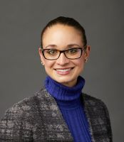

Panels
Participate in a conversation with experts about important areas affecting physicians scientists
Team Based Science
- Schedule: Saturday, April 21, 5:45 pm – 7:00 pm
- Location: Crystal Room
Participants
Janelle Taylor, PhD, Department of Anthropology Professor at the University of Washington
As a sociocultural anthropologist Dr. Janelle Taylor uses ethnographic methods to study health, illness, medical education, medical technology, and medical practice. Her research has focused on a variety of topics relating to medical technology, medical education, and medical practice, including fetal ultrasound imaging, medical decision- making at the end of life, how 'culture' is understood and taught within medical education, the work of "Standardized Patients" and ther role in teaching and assessing clinical skills, and questions of recognition and care in relation to dementia. Recent research explores why friendships so often prove fragile after the onset of dementia, and how some friendships nonetheless manage to adapt and adjust. A new grant from the NIA will support research into whether and how differences in health outcomes and/or health care utilization among older adults with dementia may relate to availability of family to provide informal caregiving support. A thread running through all of Dr. Taylor's research is a concern to document and understand how representations inform social practices; how mediation happens between different systems of value; how "persons" are socially made (and unmade); and how medicine and health care are involved in all of this.
Policy and Advocacy Workshop
- Schedule: Saturday, April 21, 5:45 pm – 7:00 pm
- Location: TBA
Participants
Samantha Spellicy, BS (Moderator), MD/PhD Student at Medical College of Georgia and University of Georgia.
Ms. Samantha Spellicy is a 4 th year MD/PhD student at the Medical College of Georgia and University of Georgia. She received her B.S. degree in Physiology and Neurobiology from the University of Maryland. After completion of her postbaccalaureate, Ms. Spellicy began her medical training at the Medical College of Georgia. While engaged in the medical curricula, she was selected as a co-coordinator of the newly founded Equality Clinic where in addition to her clinical duties, she was able to conduct medical education research on the student-led interdisciplinary clinic. During this time, she also participated in stroke research through the neurology department at MCG under Dr. Jeffery Switzer, D.O, and Medical School Dean Dr. David Hess, MD.
Last year, she started her PhD in neuroscience in the Regenerative Bioscience Center at the University of Georgia in the lab of Dr. Steven Stice, PhD. In the lab, she works on development of regenerative medicine therapies for neurodegenerative diseases such as stroke, Parkinson’s, and glioblastoma multiforme. Currently, Ms. Spellicy is a member of the APSA Policy Committee, in addition to holding positions in multiple organizations at UGA. Following completion of her MD/PhD she hopes to pursue residency training in neurosurgery or neurology.
Michael Coburn, Executive Vice President and Chief Operating Officer of Research!America,
Michael Coburn serves as Executive Vice President and Chief Operating Officer of Research!America, the nation's largest not-for- profit public education and advocacy alliance committed to making research to improve health a higher national priority. Throughout his more than 30 years serving the nonprofit sector, his focus on optimizing organizational performance through strong governance, sound financial management, innovative program development and passionate advocacy has blazed a track record of success with prominent mission-based organizations. He has planned workshops and presents regularly to a variety of scientific and non-scientific audiences on public engagement and science advocacy. Mike frequently represents Research!America at gatherings of members and stakeholders, including the Friends of the National Library of Medicine, NIH Scientific Fellows retreats and sessions at the Biotechnology Innovation Organization annual convention.
Alternative Careers
- Schedule: Sunday, April 22, 10:00 am – 11:00 am
- Location: Embassy Room
Participants

Daryll C. Dykes, PhD, MD, JD, President and CEO of Medical and Surgical Spine Consultants of Minnesota
Dr. Daryll Dykes is native of Syracuse, New York. After serving in the U.S. Marine Corps, he completed undergraduate studies at Syracuse University and the MD/PhD medical-scientist program at SUNY Upstate Medical University. He then trained in orthopedic surgery at the University of Minnesota, and completed fellowships in spine surgery, trauma surgery, and health services outcomes research. After a decade of patient care, research and teaching—fueled by his growing interest in physician leadership and systemic healthcare issues—Dr. Dykes completed his JD at William Mitchell College of Law. He has held numerous local and national leadership positions in educational and philanthropic organizations, has authored over two dozen book chapters, journal articles, and law review articles, and has mentored over 100 orthopedic fellows. His personal and academic accomplishments led to his selection as a 2016-17 Robert Wood Johnson Foundation Health Policy Fellow—the nation’s most prestigious learning experience at the nexus of health, science, and policy in Washington, D.C. In this capacity, Dr. Dykes worked as an integral staff member on the U.S. House of Representatives Committee on Energy and Commerce—the congressional committee with the broadest jurisdiction over federal healthcare, including the Department of Health and Human Services, CMS, CDC, NIH and FDA. After transitioning to the FDA to assist in the implementation of key legislative mandates passed during his time on Capitol Hill, Dr. Dykes returned to the managing partner role in his practice in Minneapolis. Outside of work, he is a passionate traveler, bicyclist, foodie, and photographer.
Anna Fisher, MD, University of Rochester School of Medicine & Dentistry
Fisher holds a mark of distinction in the history books; she became the first mother in space when she flew on STS-51A.
Anna Fisher graduated with a Bachelor of Science degree in chemistry and a Doctor of Medicine degree from UCLA in 1971 and 1976, respectively. Fisher received a Master of Science degree in chemistry from UCLA in 1987. Fisher joined NASA in 1978 when she was selected as an astronaut candidate. A space flight veteran, Fisher spent 192 hours living and working on the space shuttle orbiter. On Nov. 8, 1984, Fisher flew as a mission specialist on STS-51A, the second flight of the Space Shuttle Discovery. During the mission, the crew deployed two satellites and operated the Radiation Monitoring Equipment (RME) device. This was the first space salvage mission, as the crew retrieved the Palapa B-2 and Westar VI satellites to return to Earth. Fisher also supported shuttle missions STS-1 through STS-7 and served as Capsule Communicator (CAPCOM) for STS-9. She worked as the deputy of the Mission Development branch of the Astronaut Office and served on the Astronaut Selection Board for the 1987 class of astronauts.
From 1996 to 2002, Fisher was the chief of the Space Station branch of the Astronaut Office, during the early days of the International Space Station (ISS). In that capacity, she coordinated inputs to the operations of the space station for the Astronaut Office, working with all the international partners and supervising assigned astronauts and engineers. From 2011 to 2013, Fisher worked as an ISS CAPCOM in the Mission Control Center and was the lead CAPCOM for Expedition 33.
Andrew Chan, MD, PhD, Senior Vice President of Research-Biology at Genentech, Inc.
Dr. Andrew Chan is Senior Vice President of Research-Biology at Genentech, Inc. He joined Genentech, Inc in 2001 as Senior Director of the Departments of Immunology and Antibody Engineering, was named Vice President and Senior Vice President of Research- Immunology in 2003 and 2007, respectively, and appointed Senior Vice President- Research Biology where he oversees biological research at Genentech. His research is focused on immunobiology of immunodeficiencies and autoimmunity. Chan is a co-inventor of ocrelizumab, a CD20 targeting humanized antibody, approved for the treatment of relapsing and primary progressive forms of multiple sclerosis.
Chan serves on the National Council of the Washington University School of Medicine, National Research Advisory Council for Washington University, Board of the Rosalind Russell/Ephraim Engleman Arthritis Center, and Chemistry Life Processes Institute at Northwestern University. He is a frequent ad hoc reviewer for a number of scientific journals and NIH study sections. He is a member of the American Association of Physicians, American Society for Clinical Investigation, Henry Kunkel Society and a Pew Scholar.
Transitioning
- Schedule: Sunday, April 23, 11:00 am – 12:00 pm
- Location: Gold Room
Participants

Jose Rodrigues, BS (moderator), DO/PhD Student at Michigan State University College of Osteopathic Medicine
Jose Rodrigues is a second-year osteopathic medical student a Michigan State University College of Osteopathic Medicine’s dual degree program. Jose’s PhD dissertation is in Microbiology and Molecular Genetics under the direction of Shannon Manning PhD. Jose and Dr. Manning focus on molecular epidemiology using Campylobacter jejuni as a model to understand pathogenesis of antibiotic resistant infections. During Jose’s undergraduate and before medical school he has engaged in research projects focusing on cancer biology, protein chemistry and population medicine. Jose has also been active member of Project 351 a non-profit organization focusing on training service-leadership skills to young adults in Massachusetts. Jose is interested using his training to pursue a career in infectious disease and applied epidemiology.
Dianna Milewicz, MD, PhD, President George H.W. Bush Chair of Cardiovascular Medicine, Director of the Division of Medical Genetics and Vice-Chair of the Department of Internal Medicine at the University of Texas Medical School at Houston.
Dianna M. Milewicz, MD PhD, is the President George H.W. Bush Chair of Cardiovascular Medicine, Director of the Division of Medical Genetics and Vice-Chair of the Department of Internal Medicine at the University of Texas Medical School at Houston. She completed her postgraduate training in internal medicine, specialized further in cardiology and medical genetics, and forged a career in translational studies focused on genetic predisposition to vascular diseases. Her research team identified many of the genes for inherited thoracic aortic disease and she organized the International Montalcino Aortic Consortium to define the phenotype associated with these genes. More recently, she has launched studies to investigate the genetic causes of childhood strokes. Dr. Milewicz has received numerous honors and awards for her research, including the Antoine Marfan Award from the Marfan Foundation, the Doris Duke Distinguished Clinical Scientist Award, and the University of Texas Presidential Scholars Award for Excellence in Research. She has been inducted into the American Society of Clinical Investigation and the Association of American Physicians. Dr. Milewicz is also committed to training physician scientists and have served as the Director of the M.D./Ph.D. Program offered jointly between the University of Texas Health Science Center at Houston and MD Anderson Cancer Center institutions for over 10 years.
Paul Utz, MD, Professor Medicine/Immunology& Rheumatology Stanford University School of Medicine
Dr. Utz directs a highly-successful lab of 10-12 scientists at Stanford University School of Medicine. The lab focuses on the normal immune system and how it differs from the immune system of patients with immunodeficiency disorders, infections, and autoimmune diseases. Autoimmune diseases being studied include systemic lupus erythematosus (SLE), rheumatoid arthritis (RA), systemic sclerosis (scleroderma), myositis, primary biliary cirrhosis (PBC), Sjögren's disease, insulin dependent diabetes (type I diabetes or IDDM), multiple sclerosis (MS), inflammatory bowel disease (IBD), and mixed connective tissue disease (MCTD). In addition to trying to better understand the pathogenic mechanisms involved in autoimmune and inflammatory diseases, the lab is interested in developing bench-to-bedside technologies, including diagnostics and therapeutics, for human immune diseases. Finally, the Utz is also active in vaccine biology, both for inducing protective immunity to pathogens and for turning off immune responses in autoimmune diseases.
Resilience Workshop
- Schedule: Sunday, April 22, 11:00 am – 12:30 pm
- Location: Gold Room
Participants

Audra Iness, BS (moderator), MD/PhD Student at Virginia Commonwealth University School of Medicine
Audra Iness is a fifth year MD-PhD student at Virginia Commonwealth University (VCU) School of Medicine. She graduated Summa Cum Laude with a B.S. in Biology from California State University, Fresno's Smittcamp Honors Program in 2013. Audra earned membership in the Association of Clinical Pathologists & The Intersociety Council for Pathology Information, Inc. Pathology Honor Society for her medical school performance. She has also been a coordinator for the Mattaponi Healing Eagle Clinic, serving the Native Americans of Virginia, and is an active member of the medical school Admissions Committee. Currently, Audra is studying the DREAM complex and its role in cell cycle regulation in Dr. Larisa Litovchick's lab at VCU. Additionally, she enjoys playing soccer and has been a part of a community league for several years. Her involvement in APSA began when she founded a local chapter at VCU and held roles as President and Institutional Representative. She has enjoyed working to unify the physician-scientist community in her roles on the Executive Council for the past three years. This year, Audra has established and Chaired the Physician Scientist Trainee Diversity Working Group, including representatives from five national medical organizations, aimed at supporting women and underrepresented groups in their pursuit of physician scientist careers. Working with her enthusiastic APSA colleagues, she plans to expand this initiative over her Presidential term in 2018-2019.
Dani Dumitriu, MD, PhD, Assistant Professor of Neuroscience at the Icahn School of Medicine at Mount Sinai
Dani Dumitriu, MD, PhD, is an Assistant Professor of Neuroscience and member of the Mindich Child Health and Development Institute and the Institute for Exposomic Research at the Icahn School of Medicine at Mount Sinai. She holds these faculty appointments concurrent with clinical training, currently completing the fifth and final year of a combined General Pediatrics Residency and a fellowship in Pediatric Environmental Health. This unconventional route of combining residency training with starting a lab was born out of a deep fascination with the neurobiology of stress resilience, the focus of the Dumitriu lab. Having begun this work during a brief post-doctoral fellowship toward the end the MD/PhD program at the Icahn School of Medicine at Mount Sinai, upon graduation, Dr. Dumitriu encountered the common physician-scientist predicament: the impossible choice between a prolonged absence from bench work versus continuing a research fellowship and giving up the rewards of clinical medicine. Refusing to make this difficult choice, upon matching into the Pediatric residency at the same institution, Dr. Dumitriu worked with the Departments of Pediatrics, Environmental Health and Neuroscience to develop a custom-tailored five-year track with integrated and increasing research effort. In Year 2, she was awarded a NARSAD Young Investigator award. In Year 3, she was appointed Assistant Professor in a Neuroscience, a non-clinical department. In Year 4, she was awarded an R01 from NIMH, making her the second documented resident (and first female resident) in the U.S. to receive the award during clinical training.
Michael Helmrath, MD, MS, Surgical Director of Research at Cincinnati Children’s Hospital Medical Center
As a pediatric surgeon, Dr. Helmrath has dedicated his clinical and research career to the care of patients with intestinal diseases. To achieve this, he has developed and oversees a multidisciplinary teams that combines clinical, translational and basic science. The main focus of his basic science laboratory is directed towards characterizing intestinal stem cells during development and following bowel loss to inform intestinal regenerative strategies. His clinical career is focused on both patients with intestinal short bowel and obese adolescents undergoing bariatric procedures, both including dedicated clinical studies. By combining his experience as the Surgical Director of Research at Cincinnati Children’s Hospital Medical Center, he is poised to establish translational therapies for the management of patients with intestinal diseases.